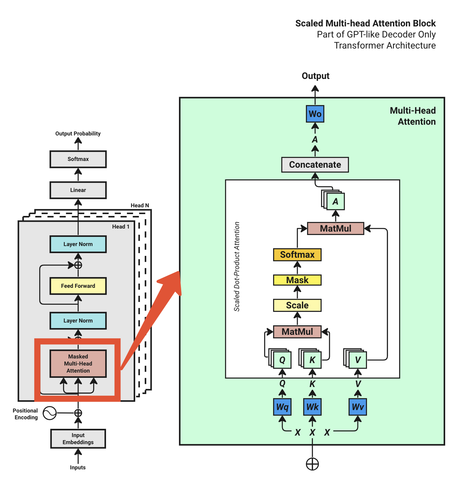

Step 3: 位置エンコーディング 入力トークンをベクトルに変換するために、シンプルな埋め込みレイヤーを使用します。
# Define Token Embedding look-up table
token_embedding_lookup_table = nn.Embedding(max_token_value, d_model)
# Get X and Y embedding
x = token_embedding_lookup_table(x_batch.data)
y = token_embedding_lookup_table(y_batch.data)
現在、入力 x と y の両方とも形状(batch_size, context_length, d_model)になっています。
# Get x and y embedding
x = token_embedding_lookup_table(x_batch.data) # [4, 16, 64] [batch_size, context_length, d_model]
y = token_embedding_lookup_table(y_batch.data)
位置エンベディングの適用 元の論文で説明されているように、位置エンベディングテーブルを生成するためにサインとコサインを使用し、 これらの位置情報を入力埋め込みトークンに加えます。
# Define Position Encoding look-up table
position_encoding_lookup_table = torch.zeros(context_length, d_model) # initial with zeros with shape (context_length, d_model)
position = torch.arange(0, context_length, dtype=torch.float).unsqueeze(1)
# apply the sine & cosine
div_term = torch.exp(torch.arange(0, d_model, 2).float() * (-math.log(10000.0) / d_model))
position_encoding_lookup_table[:, 0::2] = torch.sin(position * div_term)
position_encoding_lookup_table[:, 1::2] = torch.cos(position * div_term)
position_encoding_lookup_table = position_encoding_lookup_table.unsqueeze(0).expand(batch_size, -1, -1) #add batch to the first dimension
print("Position Encoding Look-up Table: ", position_encoding_lookup_table.shape)
プリントされた出力：
Position Encoding Look-up Table: torch.Size([4, 16, 64])
その後、入力埋め込みベクトルに位置エンコーディングを加えます。
# Add positional encoding into the input embedding vector
input_embedding_x = x + position_encoding_lookup_table # [4, 16, 64] [batch_size, context_length, d_model]
input_embedding_y = y + position_encoding_lookup_table
X = input_embedding_x
x_plot = input_embedding_x[0].detach().cpu().numpy()
print("Final Input Embedding of x: \n", pd.DataFrame(x_plot))
これで、トランスフォーマーブロックに供給される値である final input embedding of X を取得しました。
Final Input Embedding of x:
0 1 2 3 4 5 6 7 8 9 ... 54 55 56 57 58 59 60 61 62 63
0 -1.782388 1.200549 -0.177262 0.278616 -1.322919 0.929397 -0.178307 1.453488 -0.216367 -2.049190 ... -0.009743 2.694576 -0.592321 1.235002 1.137691 1.076938 -1.583359 1.994682 -0.411284 2.365598
1 0.434183 2.051380 0.642167 1.294858 0.287493 -0.132648 -0.388530 0.106470 0.515283 1.686583 ... 0.423079 0.564006 -1.514647 0.263115 -2.233931 1.759137 2.413690 -0.372896 0.512504 2.831246
2 0.180579 -0.714483 0.983105 -0.944209 1.182870 -0.100558 0.807144 0.232830 -0.455422 2.246022 ... 0.056277 0.913973 -0.200273 0.688581 1.302482 2.202587 -0.980815 -0.181238 0.747766 1.742957
3 -0.249654 -3.228277 -0.017824 0.492374 0.992460 -1.281102 0.811163 0.678884 0.251492 0.319295 ... 1.329760 1.259970 -0.345209 1.030813 0.629613 1.289158 0.586766 0.970829 1.487210 0.858970
4 1.533710 -1.794257 -0.115366 -2.216147 0.143978 -2.549789 0.285271 0.908505 -1.371307 1.000596 ... -0.171948 1.476006 -0.411271 2.187133 0.580001 1.330921 -0.996333 3.353865 0.216231 -0.570538
5 -2.187219 -0.290028 -0.914946 -0.614617 -0.033163 -1.060609 2.265111 -1.180711 1.237476 0.817889 ... 1.869089 0.720627 -1.679796 1.405375 0.399367 0.725817 -0.047124 -0.977291 0.013971 0.819522
6 -1.015749 1.862600 0.785039 2.425240 0.613279 -1.725359 1.288837 -1.810941 2.514978 0.433844 ... 0.408046 1.537934 -0.192739 0.709489 0.535088 -0.347714 -2.239857 -0.033674 0.192698 -0.136556
7 -0.446721 1.136845 0.336349 1.287424 1.515973 0.814479 0.233362 -1.706994 -0.438097 -0.674278 ... 0.697751 0.913269 -0.332155 -0.149376 0.140298 2.597988 0.219866 1.489297 1.089043 -1.265491
8 -0.190227 -0.968500 -1.648937 2.915030 -3.227971 -0.739308 -0.485671 -0.869817 -0.153695 -1.206717 ... 1.403767 0.636459 0.094945 -0.747135 0.495720 0.164661 -0.610816 0.730676 0.587971 2.341617
9 -0.224795 -0.326915 -0.362390 1.489488 -0.389251 -0.362224 0.913598 -2.051510 0.778566 -0.696349 ... 0.394737 1.314234 -0.124517 1.888481 0.689187 0.396996 1.056659 0.785319 1.079981 -0.194575
10 -0.692015 -1.732475 2.214933 -1.991298 -0.398353 1.266861 -1.057534 -1.157881 -0.801310 -0.614316 ... -1.901223 -0.854748 0.163998 0.173750 -1.058628 1.532371 -0.257311 1.359694 1.033851 0.677123
11 0.713966 -0.232073 2.291222 0.224710 -1.199412 0.022869 -1.532023 -0.403545 -0.262371 -1.097961 ... 1.827974 0.126189 1.134699 0.425639 -1.347956 0.086310 -0.774953 1.218501 -1.761807 0.117464
12 -0.468460 1.830461 1.335220 -1.410995 0.069466 1.672440 -1.680814 -1.598549 0.521277 -1.871883 ... -1.775825 -0.046493 0.723062 1.785805 1.166462 2.608919 1.078712 2.193650 1.377550 1.002753
13 1.436239 0.494849 1.781795 0.060173 0.538164 1.890070 -2.363284 2.231389 -1.082167 0.040986 ... -0.764243 -1.155260 0.084449 1.592648 0.105955 1.080390 -1.063937 0.691866 -0.906071 0.383779
14 -0.113100 0.519679 0.316672 0.299135 3.229518 1.496113 -0.325615 0.203938 -2.198124 -0.356190 ... 0.700703 0.913256 -0.329941 -0.149384 0.141958 2.597984 0.221110 1.489295 1.089976 -1.265493
15 0.301521 0.997564 -0.672755 -1.215677 0.949777 0.474997 -0.279164 1.144048 -1.059472 0.068650 ... 0.796498 -1.032138 0.977697 0.790623 0.725540 1.646803 1.253047 0.296801 0.798098 2.022164
[16 rows x 64 columns]
注：yの埋め込みベクトルはxと同じ形状になります。
Step 4: トランスフォーマーブロック 4.1 マルチヘッドアテンションの概要 マルチヘッドアテンションの図を再度見てみましょう。
 入力埋め込み X を取得したので、マルチヘッドアテンションブロックの実装を開始できます。
マルチヘッドアテンションブロックを実装するには、いくつかのステップがあります。一つずつコード化していきましょう。
4.2 Q,K,Vの準備
# Prepare Query, Key, Value for Multi-head Attention
query = key = value = X # [4, 16, 64] [batch_size, context_length, d_model]
# Define Query, Key, Value weight matrices
Wq = nn.Linear(d_model, d_model)
Wk = nn.Linear(d_model, d_model)
Wv = nn.Linear(d_model, d_model)
Q = Wq(query) #[4, 16, 64]
Q = Q.view(batch_size, -1, num_heads, d_model // num_heads) #[4, 16, 4, 16]
K = Wk(key) #[4, 16, 64]
K = K.view(batch_size, -1, num_heads, d_model // num_heads) #[4, 16, 4, 16]
V = Wv(value) #[4, 16, 64]
V = V.view(batch_size, -1, num_heads, d_model // num_heads) #[4, 16, 4, 16]
その後、 Q, K, V to [batch_size, num_heads, context_length, head_size] の形に再構成し、さらなる計算のために準備します。
# Transpose q,k,v from [batch_size, context_length, num_heads, head_size] to [batch_size, num_heads, context_length, head_size]
# The reason is that treat each batch with "num_heads" as its first dimension.
Q = Q.transpose(1, 2) # [4, 4, 16, 16]
K = K.transpose(1, 2) # [4, 4, 16, 16]
V = V.transpose(1, 2) # [4, 4, 16, 16]
4.3 QK^T アテンションの計算 これは torch.matmul 関数を使用することで非常に簡単に行えます。
# Calculate the attention score betwee Q and K^T
attention_score = torch.matmul(Q, K.transpose(-2, -1))
4.4 スケール
# Then Scale the attention score by the square root of the head size
attention_score = attention_score / math.sqrt(d_model // num_heads)
実際には、4.3 と 4.4 を一行で書き換えることができます。
attention_score = torch.matmul(Q, K.transpose(-2, -1)) / math.sqrt(d_model // num_heads) # [4, 4, 16, 16] #[4, 4, 16, 16] [batch_size, num_heads, context_length, context_length]
print(pd.DataFrame(attention_score[0][0].detach().cpu().numpy()))
プリントされた出力：
0 1 2 3 4 5 6 7 8 9 10 11 12 13 14 15
0 0.105279 -0.365092 -0.339839 -0.650558 -0.464043 -0.531401 0.437939 -0.650732 -0.616331 -0.429000 -0.332607 0.080401 0.000111 -0.601670 -0.783942 0.147967
1 -0.302636 0.525435 0.863502 -0.218539 0.600691 -0.413970 0.408111 0.765074 -0.376257 0.233526 0.915393 -0.263153 0.683832 0.430964 0.802033 0.281169
2 0.201820 0.156336 -0.245585 0.101653 0.228243 -0.565197 0.589193 -0.579525 -0.080071 0.078848 -0.471447 0.481268 -0.129725 -0.123364 -0.963065 -0.582126
3 0.517998 -0.303064 0.484515 -0.399551 -0.004528 -0.028223 -0.602194 0.107085 -0.504462 0.017590 0.592893 -0.750240 0.022489 -0.014217 -0.038678 0.484633
4 0.519200 0.322036 0.328027 -0.031755 0.006269 0.133609 -0.095071 -0.252013 0.096449 -0.268063 -0.306129 -0.045432 -0.027766 -0.163095 -0.338737 0.712901
5 -0.635913 0.137114 0.083046 0.234778 -0.668992 -0.366838 -0.613126 0.245075 -0.042131 0.221872 0.806992 -0.279996 0.046113 0.646270 0.284564 0.478298
6 -0.287777 -0.841604 -0.128455 -0.566180 0.079559 -0.530863 -0.082675 0.072495 -0.264806 -0.229649 0.269325 -0.185602 -0.366693 -0.321176 -0.130587 0.416121
7 -0.798519 -0.905525 0.317880 -0.176577 0.751465 -0.564863 1.014724 -0.068284 -0.527703 0.118972 0.085287 -0.102589 -0.640548 0.376717 -0.120097 0.164074
8 0.141614 -0.022169 0.152088 -0.519404 -0.069152 -0.880496 -0.229767 -0.849347 -0.539544 -0.510258 -0.246146 -0.266640 -0.086958 -0.577571 -1.191547 0.050306
9 -0.097493 0.860376 0.073501 0.150553 -0.651579 -0.376676 -0.691368 0.315606 0.135982 0.292198 0.774460 -0.131879 0.626085 0.452120 0.153703 0.082386
10 -0.469827 0.302545 -0.015767 -0.175387 -0.049927 -0.706852 0.511237 0.043908 -0.492887 -0.168435 -0.167744 0.016956 0.141400 -0.102674 -0.072396 -0.261558
11 -0.335474 -0.399539 -0.093901 -0.682290 0.312682 -0.310319 0.344753 0.017465 -0.364808 -0.262316 -0.282589 -0.239767 0.008904 -0.621042 -0.261246 -0.214888
12 -1.757631 -0.967825 -0.516159 -0.246766 -0.352132 -0.780370 -0.262975 -0.793605 -0.238561 -0.374695 -0.132526 -0.126956 -0.524015 -0.194315 -1.046538 -0.402560
13 0.550975 0.313643 -0.074468 0.519995 -0.149188 -0.565922 0.199527 -0.738029 0.142203 -0.164007 -0.494203 0.570010 -0.579608 -0.198923 -0.869503 -0.120218
14 -0.616347 -0.812240 0.245260 0.167278 0.913596 -0.493119 1.139083 -0.300623 -0.399155 0.200648 -0.114634 0.147219 -0.829207 0.363519 -0.325846 0.026840
15 -0.145391 0.514632 -0.296119 -0.038103 -0.187110 -0.634636 0.509902 -0.338267 -0.231534 -0.007304 -0.432799 0.339123 0.248173 -0.242426 -0.595925 -0.442379
4.5 マスク
# Apply Mask to attention scores
attention_score = attention_score.masked_fill(torch.triu(torch.ones(attention_score.shape[-2:]), diagonal=1).bool(), float('-inf')) #[4, 4, 16, 16] [batch_size, num_heads, context_length, context_length]
print(pd.DataFrame(attention_score[0][0].detach().cpu().numpy()))
プリントされた出力 (バッチその1のケース) :
0 1 2 3 4 5 6 7 8 9 10 11 12 13 14 15
```text
0 1 2 3 4 5 6 7 8 9 10 11 12 13 14 15
0 0.105279 -inf -inf -inf -inf -inf -inf -inf -inf -inf -inf -inf -inf -inf -inf -inf
1 -0.302636 0.525435 -inf -inf -inf -inf -inf -inf -inf -inf -inf -inf -inf -inf -inf -inf
2 0.201820 0.156336 -0.245585 -inf -inf -inf -inf -inf -inf -inf -inf -inf -inf -inf -inf -inf
3 0.517998 -0.303064 0.484515 -0.399551 -inf -inf -inf -inf -inf -inf -inf -inf -inf -inf -inf -inf
4 0.519200 0.322036 0.328027 -0.031755 0.006269 -inf -inf -inf -inf -inf -inf -inf -inf -inf -inf -inf
5 -0.635913 0.137114 0.083046 0.234778 -0.668992 -0.366838 -inf -inf -inf -inf -inf -inf -inf -inf -inf -inf
6 -0.287777 -0.841604 -0.128455 -0.566180 0.079559 -0.530863 -0.082675 -inf -inf -inf -inf -inf -inf -inf -inf -inf
7 -0.798519 -0.905525 0.317880 -0.176577 0.751465 -0.564863 1.014724 -0.068284 -inf -inf -inf -inf -inf -inf -inf -inf
8 0.141614 -0.022169 0.152088 -0.519404 -0.069152 -0.880496 -0.229767 -0.849347 -0.539544 -inf -inf -inf -inf -inf -inf -inf
9 -0.097493 0.860376 0.073501 0.150553 -0.651579 -0.376676 -0.691368 0.315606 0.135982 0.292198 -inf -inf -inf -inf -inf -inf
10 -0.469827 0.302545 -0.015767 -0.175387 -0.049927 -0.706852 0.511237 0.043908 -0.492887 -0.168435 -0.167744 -inf -inf -inf -inf -inf
11 -0.335474 -0.399539 -0.093901 -0.682290 0.312682 -0.310319 0.344753 0.017465 -0.364808 -0.262316 -0.282589 -0.239767 -inf -inf -inf -inf
12 -1.757631 -0.967825 -0.516159 -0.246766 -0.352132 -0.780370 -0.262975 -0.793605 -0.238561 -0.374695 -0.132526 -0.126956 -0.524015 -inf -inf -inf
13 0.550975 0.313643 -0.074468 0.519995 -0.149188 -0.565922 0.199527 -0.738029 0.142203 -0.164007 -0.494203 0.570010 -0.579608 -0.198923 -inf -inf
14 -0.616347 -0.812240 0.245260 0.167278 0.913596 -0.493119 1.139083 -0.300623 -0.399155 0.200648 -0.114634 0.147219 -0.829207 0.363519 -0.325846 -inf
15 -0.145391 0.514632 -0.296119 -0.038103 -0.187110 -0.634636 0.509902 -0.338267 -0.231534 -0.007304 -0.432799 0.339123 0.248173 -0.242426 -0.595925 -0.442379
上記の通り、対角線と上三角形は-infでマスクされています。
4.6 ソフトマックス
# Softmax the attention score
attention_score = torch.softmax(attention_score, dim=-1) #[4, 4, 16, 16] [batch_size, num_heads, context_length, context_length]
print(pd.DataFrame(attention_score.detach().cpu().numpy()))
プリントされた出力 (バッチその1のケース) :
0 1 2 3 4 5 6 7 8 9 10 11 12 13 14 15
0 0.062604 0.062472 0.062478 0.062419 0.062452 0.062439 0.062748 0.062419 0.062424 0.062459 0.062479 0.062595 0.062568 0.062427 0.062399 0.062619
1 0.062377 0.062529 0.062643 0.062387 0.062551 0.062364 0.062499 0.062605 0.062368 0.062460 0.062664 0.062381 0.062577 0.062505 0.062619 0.062470
2 0.062565 0.062551 0.062453 0.062535 0.062574 0.062400 0.062717 0.062398 0.062488 0.062529 0.062414 0.062668 0.062477 0.062479 0.062354 0.062398
3 0.062647 0.062427 0.062634 0.062411 0.062486 0.062480 0.062384 0.062513 0.062396 0.062491 0.062679 0.062367 0.062492 0.062483 0.062478 0.062634
4 0.062635 0.062566 0.062567 0.062473 0.062481 0.062512 0.062460 0.062430 0.062502 0.062428 0.062421 0.062470 0.062474 0.062446 0.062416 0.062720
5 0.062371 0.062501 0.062488 0.062527 0.062367 0.062405 0.062373 0.062529 0.062461 0.062523 0.062744 0.062418 0.062480 0.062669 0.062541 0.062603
6 0.062467 0.062379 0.062504 0.062417 0.062562 0.062422 0.062516 0.062560 0.062472 0.062480 0.062628 0.062490 0.062451 0.062460 0.062503 0.062689
7 0.062358 0.062348 0.062566 0.062444 0.062742 0.062384 0.062900 0.062465 0.062389 0.062509 0.062500 0.062458 0.062375 0.062585 0.062455 0.062521
8 0.062632 0.062573 0.062636 0.062449 0.062559 0.062391 0.062513 0.062395 0.062445 0.062450 0.062509 0.062504 0.062553 0.062438 0.062356 0.062598
9 0.062434 0.062727 0.062467 0.062484 0.062360 0.062391 0.062356 0.062525 0.062480 0.062519 0.062687 0.062428 0.062625 0.062565 0.062484 0.062469
10 0.062419 0.062608 0.062511 0.062473 0.062502 0.062385 0.062693 0.062527 0.062415 0.062475 0.062475 0.062520 0.062555 0.062490 0.062497 0.062455
11 0.062463 0.062450 0.062519 0.062403 0.062655 0.062468 0.062669 0.062551 0.062457 0.062478 0.062474 0.062484 0.062548 0.062412 0.062479 0.062489
12 0.062327 0.062405 0.062489 0.062561 0.062530 0.062435 0.062556 0.062433 0.062564 0.062524 0.062599 0.062601 0.062487 0.062578 0.062394 0.062517
13 0.062685 0.062591 0.062482 0.062671 0.062466 0.062395 0.062554 0.062374 0.062538 0.062463 0.062405 0.062693 0.062393 0.062456 0.062360 0.062472
14 0.062372 0.062352 0.062530 0.062509 0.062806 0.062387 0.062958 0.062414 0.062400 0.062518 0.062447 0.062504 0.062350 0.062566 0.062410 0.062476
15 0.062479 0.062693 0.062448 0.062504 0.062470 0.062394 0.062691 0.062440 0.062460 0.062512 0.062424 0.062620 0.062588 0.062458 0.062399 0.062422
ソフトマックス関数を適用した後、スコアは0から1の間になり、各行の合計は1になります。
4.7 V アテンションの計算 最後に、アテンションスコアに V を掛けて、マルチヘッドアテンションブロックの出力を得ます。
# Calculate the V attention output
A = torch.matmul(attention_score, V) # [4, 4, 16, 16] [batch_size, num_heads, context_length, head_size]
print(attention_output.shape)
プリントされた出力：
torch.Size([4, 4, 16, 16])
注: 現在の形状は [4, 4, 16, 16] すなわち [batch_size, num_heads, context_length, head_size] です。
4.8 結合と出力 前回の記事 で述べたように、マルチヘッドアテンションブロックの出力を結合して線形レイヤーに供給する必要があります。
A = A.transpose(1, 2) # [4, 16, 4, 16] [batch_size, context_length, num_heads, head_size]
A = A.reshape(batch_size, -1, d_model) # [4, 16, 64] [batch_size, context_length, d_model]
_注: 現在の形状は [4, 16, 64] すなわち [batch_size, context_length, d_model] です。
これで [64,64] の線形レイヤー Wo (トレーニング中に学習される重み) を適用し、 マルチヘッドアテンションブロックの最終出力を得ることができます：
# Define the output weight matrix
Wo = nn.Linear(d_model, d_model)
output = Wo(A) # [4, 16, 64] [batch_size, context_length, d_model]
print(output.shape)
出力をプリントすると、形状は元の入力埋め込みの形状である [4, 16, 64] に戻ります。
Step 8: 出力確率 最終的な線形レイヤーを適用して、ロジットを取得します：
logits = nn.Linear(d_model, max_token_value)(output)
print(pd.DataFrame(logits[0].detach().cpu().numpy()))
最後のステップは、各トークンの確率を得るために、ロジットに ソフトマックス を適用することです：
# torch.softmax usually used during inference, during training we use torch.nn.CrossEntropyLoss
# but for illustration purpose, we'll use torch.softmax here
probabilities = torch.softmax(logits, dim=-1)
0 1 2 3 4 5 6 7 8 9 ... 100059 100060 100061 100062 100063 100064 100065 100066 100067 100068
0 0.000007 0.000008 0.000006 0.000005 0.000004 0.000004 0.000009 0.000007 0.000009 0.000008 ... 0.000013 0.000005 0.000006 0.000014 0.000009 0.000005 0.000005 0.000016 0.000006 0.000005
1 0.000018 0.000016 0.000006 0.000017 0.000005 0.000006 0.000005 0.000005 0.000008 0.000004 ... 0.000006 0.000004 0.000006 0.000007 0.000006 0.000007 0.000014 0.000020 0.000004 0.000001
2 0.000013 0.000007 0.000008 0.000003 0.000007 0.000009 0.000021 0.000005 0.000007 0.000013 ... 0.000018 0.000009 0.000010 0.000010 0.000018 0.000009 0.000007 0.000008 0.000005 0.000015
3 0.000005 0.000013 0.000011 0.000004 0.000006 0.000007 0.000012 0.000006 0.000015 0.000010 ... 0.000032 0.000006 0.000008 0.000005 0.000014 0.000009 0.000021 0.000014 0.000004 0.000005
4 0.000005 0.000010 0.000008 0.000006 0.000017 0.000005 0.000010 0.000003 0.000008 0.000010 ... 0.000012 0.000005 0.000010 0.000003 0.000015 0.000022 0.000015 0.000010 0.000013 0.000005
5 0.000008 0.000004 0.000007 0.000003 0.000004 0.000011 0.000018 0.000007 0.000002 0.000010 ... 0.000013 0.000004 0.000012 0.000010 0.000015 0.000017 0.000010 0.000019 0.000013 0.000012
6 0.000005 0.000008 0.000014 0.000004 0.000007 0.000007 0.000012 0.000016 0.000005 0.000005 ... 0.000012 0.000007 0.000012 0.000022 0.000011 0.000018 0.000011 0.000010 0.000004 0.000014
7 0.000004 0.000008 0.000003 0.000006 0.000005 0.000019 0.000010 0.000016 0.000007 0.000011 ... 0.000014 0.000007 0.000007 0.000010 0.000013 0.000012 0.000013 0.000003 0.000008 0.000004
8 0.000002 0.000006 0.000005 0.000004 0.000006 0.000010 0.000008 0.000006 0.000016 0.000012 ... 0.000022 0.000004 0.000006 0.000011 0.000031 0.000016 0.000022 0.000006 0.000006 0.000005
9 0.000006 0.000005 0.000010 0.000008 0.000019 0.000018 0.000012 0.000011 0.000005 0.000015 ... 0.000019 0.000008 0.000005 0.000029 0.000009 0.000010 0.000009 0.000017 0.000007 0.000007
10 0.000011 0.000005 0.000008 0.000007 0.000017 0.000009 0.000007 0.000013 0.000010 0.000008 ... 0.000015 0.000011 0.000012 0.000007 0.000012 0.000020 0.000010 0.000006 0.000011 0.000009
11 0.000011 0.000006 0.000004 0.000005 0.000006 0.000012 0.000009 0.000007 0.000007 0.000004 ... 0.000042 0.000011 0.000010 0.000010 0.000021 0.000009 0.000004 0.000021 0.000008 0.000014
12 0.000005 0.000010 0.000007 0.000009 0.000007 0.000023 0.000011 0.000005 0.000006 0.000006 ... 0.000015 0.000006 0.000009 0.000003 0.000019 0.000010 0.000009 0.000056 0.000017 0.000004
13 0.000004 0.000016 0.000010 0.000010 0.000026 0.000008 0.000009 0.000002 0.000008 0.000007 ... 0.000014 0.000006 0.000010 0.000010 0.000007 0.000012 0.000008 0.000009 0.000016 0.000006
14 0.000003 0.000008 0.000019 0.000007 0.000014 0.000004 0.000009 0.000009 0.000005 0.000004 ... 0.000014 0.000010 0.000010 0.000003 0.000007 0.000013 0.000013 0.000005 0.000013 0.000002
15 0.000005 0.000010 0.000008 0.000005 0.000011 0.000010 0.000009 0.000005 0.000004 0.000005 ... 0.000009 0.000007 0.000012 0.000006 0.000013 0.000013 0.000008 0.000014 0.000005 0.000005
[16 rows x 100069 columns]
注：ここで得られるものは、全語彙における各トークンの確率を表す巨大な行列で、 形状は [16, 100069] です。